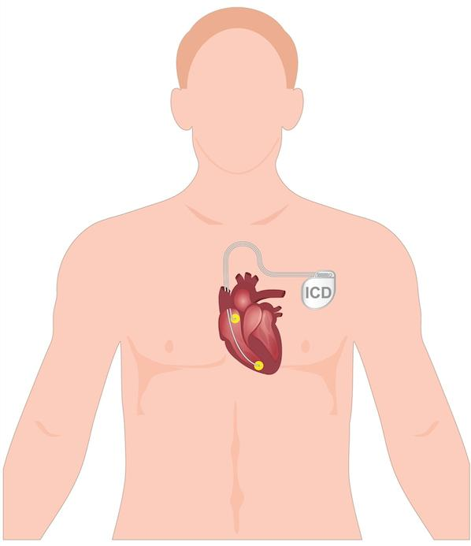
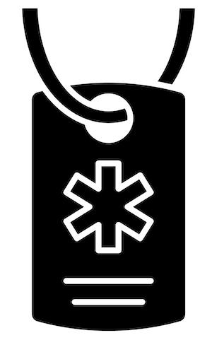
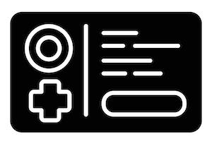

An implantable cardioverter defibrillator, or ICD, is a small device placed under your skin. It watches your heartbeat and helps keep it steady. If your heart beats too fast or out of rhythm, the ICD can send a small shock to bring it back to normal.
Your care team placed this device because you are at risk for a dangerous heart rhythm, called an arrhythmia. The ICD helps protect you from passing out or having a sudden heart stop. It is monitoring you all the time, even when you sleep.

Many people with ICDs live long, healthy lives, but it is normal to feel nervous or unsure after getting an ICD. Some people feel anxious about getting a shock or worry about being active.
You are not alone. Talking to a support group or counselor may help. Your care team is here for you, so ask us any questions you have. We want you to feel safe and supported.
Most things around you are safe. However, some strong electrical or magnetic signals can cause problems with your ICD. These are called interference signals. This section will explain how to handle this possibility.
Strong magnets or large speakers
Welding tools or electric saws
High-voltage wires or transformer boxes
MRI scans: If you are having an MRI scan, let the care team know you have an ICD so they can make sure it is safe. Most modern-day ICDs are MRI-compatible. Even older ICDs may be safe in an MRI scanner so long as certain precautions and conditions are met.
Anti-theft gates: Walk through them without stopping.
Cell phones: Keep them at least 6 inches from the device. Use on the ear opposite your ICD.
Your ICD may pause for a moment, act like it detects a problem, or send a shock when not needed. This is rare but possible.
If you feel dizzy, get a shock, or feel strange:
Sit or lie down.
Call your care team or 911, depending on how you feel.
Avoid the area or item that caused the problem.
Always keep your ICD card in your wallet or purse. Show it:
Before medical and dental visits and X-rays
At airport checks
If you are in an accident
Consider wearing a medical alert bracelet or necklace that shows you have an ICD. This helps emergency teams know not to use some treatments, like an external defibrillator, on you.


You can live a full life with an ICD. Some changes may help keep you safe.
Most people return to regular life after a few weeks.
Avoid heavy lifting or contact sports until your care team says it is OK.
It is safe to use a microwave, phone, or TV.
Your ICD is safe in water once your wound heals.
You can fly with an ICD.
Let airport security know you have an ICD before walking through scanners.
Bring your ID card when traveling.
You may need to wait to drive for a while after your ICD is placed or if it gives you a shock.
Your care team will tell you when it is safe to drive again.
You will have regular checkups to make sure your ICD is working right.
Some ICDs send data to your care team from home using a monitor.
Tell your care team if you change your phone number, address, or pharmacy.
Battery checks are done during visits. Your care team will replace the device when needed, usually every 10 years.
Call your care team if you have:
Fever of 100.4°F or 38°C or higher, or chills
Redness, swelling, warmth, drainage, or increased pain at your ICD site
Bleeding or bruising at the ICD site that does not stop or gets worse
Pain that gets worse, spreads to your arm, or does not improve after a few days
Swelling in your arm or hand on the same side as your ICD
Twitching or hiccups that do not go away, or muscle twitching near your ICD
A single shock from your ICD, even if you feel fine afterward
Any new or unusual heart symptoms, such as palpitations, fluttering, or feeling like your heart is racing
Any questions or concerns about your ICD or your health
Get help right away if you have:
More than 1 shock from your ICD in a short period, such as within 24 hours, or you lose consciousness with a shock
Severe or unusual chest pain or pressure that does not go away
Trouble breathing or shortness of breath that is new or getting worse
Dizziness, lightheadedness, fainting, or feeling like you may pass out
Uncontrolled or heavy bleeding from your ICD site
Sudden confusion, severe headache, or trouble speaking, seeing, or walking, which could be signs of a stroke
Heavy sweating with any of the above symptoms
Thank you for trusting us with your care. We are here to support you and want you to feel your best. Contact us with any questions.
IF YOU HAVE A MEDICAL EMERGENCY, CALL 911 OR GO TO THE EMERGENCY ROOM.
The information presented is intended for general information and educational purposes. It is not intended to replace the advice of your health care provider. Contact your health care provider if you believe you have a health problem.
Last updated May 2025
© 2025 Mytonomy, Inc. All rights reserved.